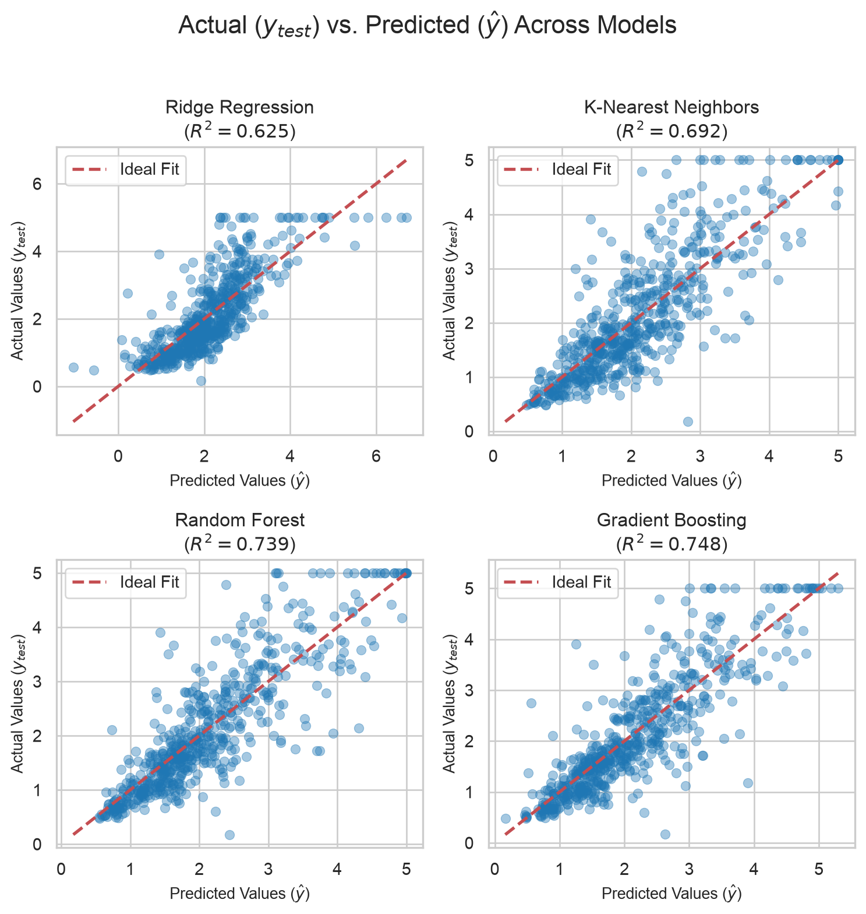
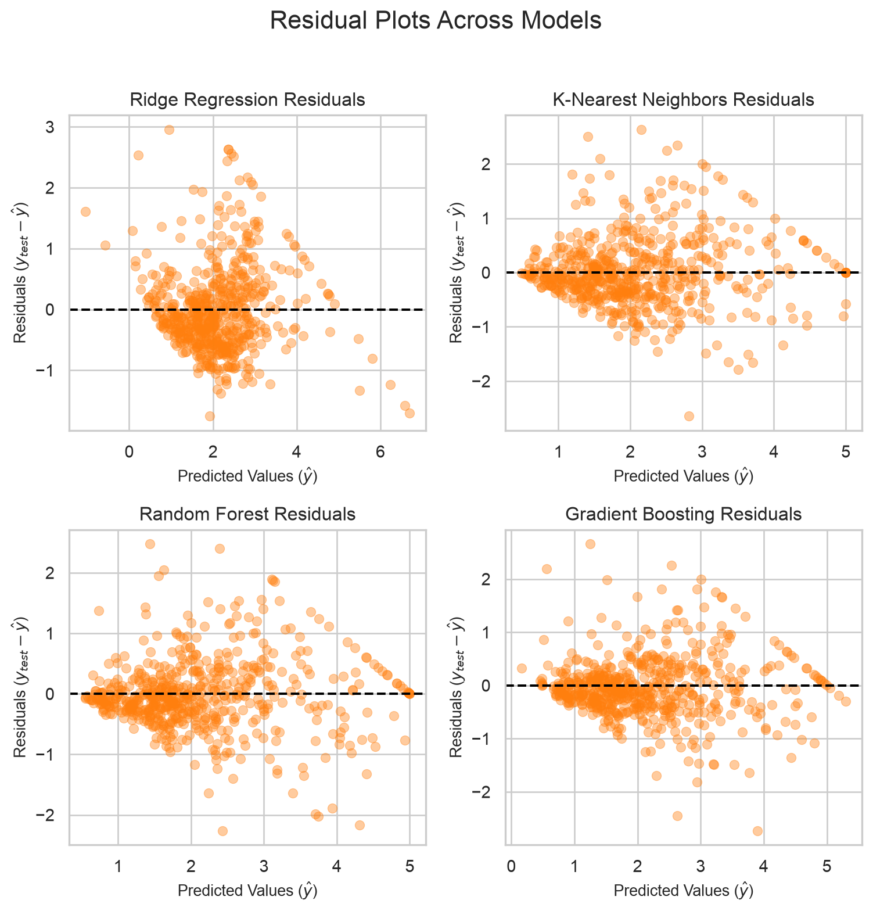

import matplotlib.pyplot as plt
import numpy as np
import pandas as pd
import seaborn as sns
from sklearn.datasets import fetch_california_housing
from sklearn.ensemble import GradientBoostingRegressor, RandomForestRegressor
from sklearn.linear_model import Ridge
from sklearn.metrics import mean_absolute_error, mean_squared_error, r2_score
from sklearn.model_selection import train_test_split
from sklearn.neighbors import KNeighborsRegressor
from sklearn.pipeline import make_pipeline
from sklearn.preprocessing import StandardScaler
# 1. Load Data & Train/Test Split
X, y = fetch_california_housing(return_X_y=True, as_frame=True)
# Subsample for faster execution and clearer scatter plots
X_sample, y_sample = X.sample(n=3000, random_state=42), y.sample(
n=3000, random_state=42
)
X_train, X_test, y_train, y_test = train_test_split(
X_sample, y_sample, test_size=0.2, random_state=42
)
# 2. Define Regressors
models = {
"Ridge Regression": make_pipeline(StandardScaler(), Ridge(alpha=1.0)),
"K-Nearest Neighbors": make_pipeline(
StandardScaler(), KNeighborsRegressor(n_neighbors=7)
),
"Random Forest": RandomForestRegressor(
n_estimators=100, max_depth=10, random_state=42, n_jobs=-1
),
"Gradient Boosting": GradientBoostingRegressor(
n_estimators=100, learning_rate=0.1, random_state=42
),
}
# 3. Fit Models & Calculate Metrics
results = []
predictions = {}
for name, model in models.items():
model.fit(X_train, y_train)
y_pred = model.predict(X_test)
predictions[name] = y_pred
rmse = np.sqrt(mean_squared_error(y_test, y_pred))
mae = mean_absolute_error(y_test, y_pred)
r2 = r2_score(y_test, y_pred)
results.append({"Model": name, "RMSE": rmse, "MAE": mae, "R² Score": r2})Regression
In machine learning, regression is a fundamental type of supervised learning where the goal is to predict a continuous numerical value based on a set of input features.
Unlike classification — which assigns data points into discrete categories (such as spam vs. not spam)—regression deals with quantities, amounts, or continuous scales.
Real-World Examples of Regression
- Real Estate: Predicting the exact selling price of a house based on square footage, location, number of bedrooms, and year built.
- Finance: Forecasting next quarter’s stock price, company revenue, or customer lifetime value (LTV).
- Economics & Weather: Estimating the exact temperature tomorrow, daily energy consumption, or retail store foot traffic.
Popular Regression Algorithms
Depending on the relationship between your features and the target variable, data scientists select from various regression models:
- Linear Regression: The foundational baseline model. It fits a straight line (or hyperplane in higher dimensions) that minimizes the overall distance between the predicted values and the actual data points.
- Ridge and Lasso Regression (Regularization): Extensions of linear regression that add penalty terms to the loss function to prevent overfitting, handle multi-collinearity, and perform feature selection (Lasso can shrink irrelevant coefficients down to absolute zero).
- Decision Trees & Random Forests: Non-linear tree-based models that split the feature space into distinct regions and predict the average target value within each region.
- Gradient Boosting (e.g., XGBoost, LightGBM, CatBoost): Powerful ensemble methods that build trees sequentially to minimize residual errors. These are industry favorites for winning tabular regression competitions.
Evaluate Regression Models
Because regression outputs continuous numbers rather than right/wrong labels, one relies on error-based metrics to measure how far predictions are from reality:
- Mean Absolute Error (MAE): The average absolute distance between predicted and actual values (\(\frac{1}{n} \sum \vert{}y_i - \hat{y}_i\vert{}\)). It is intuitive and less sensitive to massive outliers.
- Mean Squared Error (MSE): The average squared difference between predictions and actuals. Squaring penalizes larger errors more heavily, making it great for spotting severe model mistakes.
- Root Mean Squared Error (RMSE): The square root of MSE. It brings the error metric back into the exact same units as your target variable (e.g., dollars for house prices), making interpretation straightforward.
- R-Squared (\(R^2\) / Coefficient of Determination): Represents the proportion of variance in the dependent variable that is predictable from the independent features. An \(R^2\) of \(1.0\) indicates a perfect fit, while \(0.0\) means the model performs no better than simply guessing the mean.
Best Practices
- Check for Outliers: Regression models (especially those using MSE/RMSE) are highly sensitive to extreme outliers. A few bad data points can drastically skew the regression line. Always inspect distributions using boxplots or scatterplots.
- Scale Features: If one is using regularized models (Ridge/Lasso), distance-based metrics, or neural networks, always normalize or standardize the numerical features (
StandardScalerorMinMaxScaler) so that features with larger numerical ranges don’t unfairly dominate the model. - Multicollinearity: If the input features are heavily correlated with each other, standard linear regression coefficients can become unstable and erratic. Use correlation heatmaps and Variance Inflation Factor (VIF) checks to clean the feature set.
Multiple Regressors
# Display structured performance summary
df_results = pd.DataFrame(results).sort_values(by="RMSE").reset_index(drop=True)
print("--- Model Performance Comparison ---")
print(df_results.to_string(index=False))
# 4. Visualization Setup
sns.set_theme(style="whitegrid")--- Model Performance Comparison ---
Model RMSE MAE R² Score
Gradient Boosting 0.573283 0.401329 0.747995
Random Forest 0.583725 0.410396 0.738731
K-Nearest Neighbors 0.633446 0.456666 0.692326
Ridge Regression 0.698946 0.524427 0.625408# Figure 1: Actual (y_test) vs. Predicted (y_pred)
fig, axes = plt.subplots(2, 2, figsize=(8, 8))
axes = axes.flatten()
for idx, (name, y_pred) in enumerate(predictions.items()):
ax = axes[idx]
# Scatter plot: x = y_pred, y = y_test
sns.scatterplot(
x=y_pred,
y=y_test,
ax=ax,
alpha=0.4,
edgecolor=None,
color="tab:blue",
)
# Reference 1:1 line for ideal predictions
min_val = min(y_test.min(), y_pred.min())
max_val = max(y_test.max(), y_pred.max())
ax.plot([min_val, max_val], [min_val, max_val], "r--", lw=2, label="Ideal Fit")
ax.set_title(f"{name}\n($R^2 = {r2_score(y_test, y_pred):.3f}$)", fontsize=12)
ax.set_xlabel("Predicted Values ($\\hat{y}$)", fontsize=10)
ax.set_ylabel("Actual Values ($y_{test}$)", fontsize=10)
ax.legend(loc="upper left")
plt.suptitle(
"Actual ($y_{test}$) vs. Predicted ($\\hat{y}$) Across Models",
fontsize=16,
y=1.02,
)
plt.tight_layout()
plt.show()
# Figure 2: Residual Plots (Residuals vs. Predicted Values)
fig, axes = plt.subplots(2, 2, figsize=(8, 8))
axes = axes.flatten()
for idx, (name, y_pred) in enumerate(predictions.items()):
ax = axes[idx]
residuals = y_test - y_pred
# Residual scatter plot
sns.scatterplot(
x=y_pred,
y=residuals,
ax=ax,
alpha=0.4,
edgecolor=None,
color="tab:orange",
)
# Zero residual reference line
ax.axhline(y=0, color="black", linestyle="--", linewidth=1.5)
ax.set_title(f"{name} Residuals", fontsize=12)
ax.set_xlabel("Predicted Values ($\\hat{y}$)", fontsize=10)
ax.set_ylabel("Residuals ($y_{test} - \\hat{y}$)", fontsize=10)
plt.suptitle("Residual Plots Across Models", fontsize=16, y=1.02)
plt.tight_layout()
plt.show()